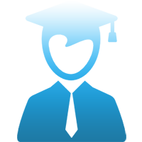

I have a real passion for web design, and I believe I have a real talent for designing overall web app with interactions such as databases or user interfaces. I take great pride in my skills, and my design achievements have been recognized from my blog fans. Everytime I work to design, I always enjoy the work. Over the past three years, I've been studying computer science at UCSD and my academic experiences here have really sharpened up my design skills. The courses I've taken here have exposed me to a lot of new technology and has allowed me to work on problem-solving techniques within a collaborative environment. Ideally, I want to design high quality, visually striking products that look great on the outside and work well on the inside.
Hyungyun Kim, I am very:

As a programmer
"Design, Build, and Connect!"
Front End Developer || Full Stack Developer
My strongest talent is design visualization. I believe the key to successful web programming lies not only in a beautiful appearance, but the logic that goes into the design. I've developed a philosophy that focuses on user-friendliness when it comes to design
As a graduate
University of California, San Diego
Computer Science, B.S. GPA: 3.8/4.0, Cum Laude
September 2014 - June 2017To be a successful developer, a strong academic background is essential no matter what your career goals are. My courses at UCSD have taught me so much about the importance of leadership, teamwork, collaboration, ethics and also general education in Computer Science.
Relevant Courseworks at UCSD:
- CSE 100 : Advanced Data Structure
- CSE 101 : Design & Analysis of Algorithm
- CSE 105 : Theory of Computability
- CSE 110 : Software Engineering
- CSE 120 : Principles of Computer Operating Systems
- CSE 130 : Programming Language
- CSE 131 : Compiler Construction
- CSE 134B : Web Client Languages
- CSE 135 : Online Database Analytics Applications
- CSE 140/140L : Components and Design Techniques for Digital Systems
- CSE 141/141L : Introduction to Computer Architecture
- CSE 170 : Interactive Design
- COGS 121 : HCI Programming Studio
- COGS 187A : Usability & Information Architecture
- MGT 103 : Product Marketing and Management
- MGT 172 : Business Project Management
As a blogger
"Communication is always first!"
Naver power blogger, reviewer, and judge
My blog has opened the door to many life-changing experiences. It has given me the chance to engage with a diverse array of people while expressing my opinions on topics I feel strongly about. Through my blog, I've had the opportunity to be a critic, a judge for a TV show, a promoter, and a marketer. These experiences have taught me so much about the field of communication.
My blog (written in Korean) : Click!As a traveller
"Diversity, all around the world"
Have travelled all around the world
One of my greatest passions in life is travel. As a result of the popularity of my blog, Canada Tourism selected me to travel to Toronto and Ottawa to promote the province of Ontario for a travel campaign. In addition, Coca-Cola sent me to South Africa to blog about the 2010 FIFA World Cup. The experiences I had and the people I met on those journeys are memories I will cherish forever. I learned an incredible amount about the importance of diversity from these experiences.